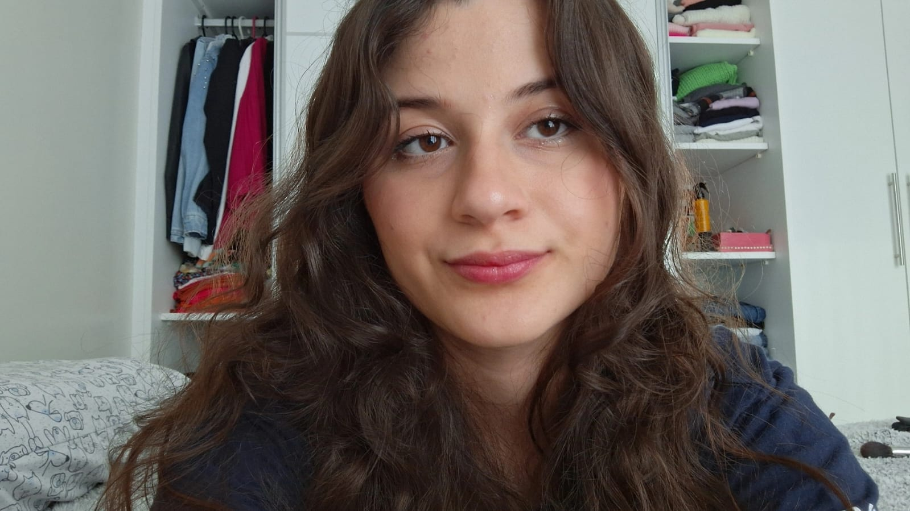

Julia de Lima
Estudante de Ciências de Dados | 17 anos | Guaramirim - SC
Sobre Mim
Sou uma estudante determinada e proativa, atualmente cursando Técnico em Ciências de Dados no CEDUP Perfeito Manoel de Aguiar. Tenho grande interesse em análise de dados, visualização e tecnologias voltadas à inovação e impacto social.
Possuo facilidade de comunicação, inclusive em inglês, e estou sempre em busca de novas experiências que contribuam para o meu desenvolvimento pessoal e profissional.
Formação Acadêmica
- 📘 Técnico em Ciências de Dados — CEDUP Perfeito Manoel de Aguiar (2023–2025)
Cursos Complementares
- Implantação de Banco de Dados – Fundação Bradesco (2024)
- Excel na Prática – Fundação Bradesco (2024)
- Introdução à Análise de Dados com Microsoft BI – Fundação Bradesco (2024)
- Visualização de Banco de Dados no Power BI – Fundação Bradesco (2024)
- Informática Básica – Curso Presencial (2018)
Premiações
- 🥈 2º lugar no Desafio Nacional de Banco de Dados – Vivo (2024)
- 🥉 3º lugar na Feira de Ciências – CEDUP (2024)
Habilidades Técnicas
| Habilidade |
Nível |
| Power BI |
Básico |
| Excel |
Básico |
| Canva |
Básico |
| Comunicação e Trabalho em Equipe |
Básico |
| Compreensão de Inglês |
Básico |
Projetos Pessoais
-
-
AquaVac – Inovação e Sustentabilidade
Projeto idealizado durante o Innovation Camp (2024), focado no desenvolvimento de um dispositivo de captação, tratamento e reuso de água em áreas alagadas.
-
Dialoga – Tecnologia e Acolhimento
Aplicativo voltado ao atendimento de pessoas em situação de vulnerabilidade, promovendo escuta especializada e acolhimento digital.
🔗 Acessar o Dialoga
-
Site 1 – Portfólio Visual
Projeto no Google Sites com informações profissionais organizadas.
🔗 Acessar Site 1
-
Site 2 – Apresentação de Conteúdos
Site educativo desenvolvido com o Google Sites.
🔗 Acessar Site 2
Projetos com Dashboards
-
Análise de Desempenho de Alunos (Power BI)
Dashboard interativo com dados escolares simulados.
-
Monitoramento de Gols e Escalações (Power BI)
Dashboard com dados de futebol: desempenho, aproveitamento e escalações.
Contato